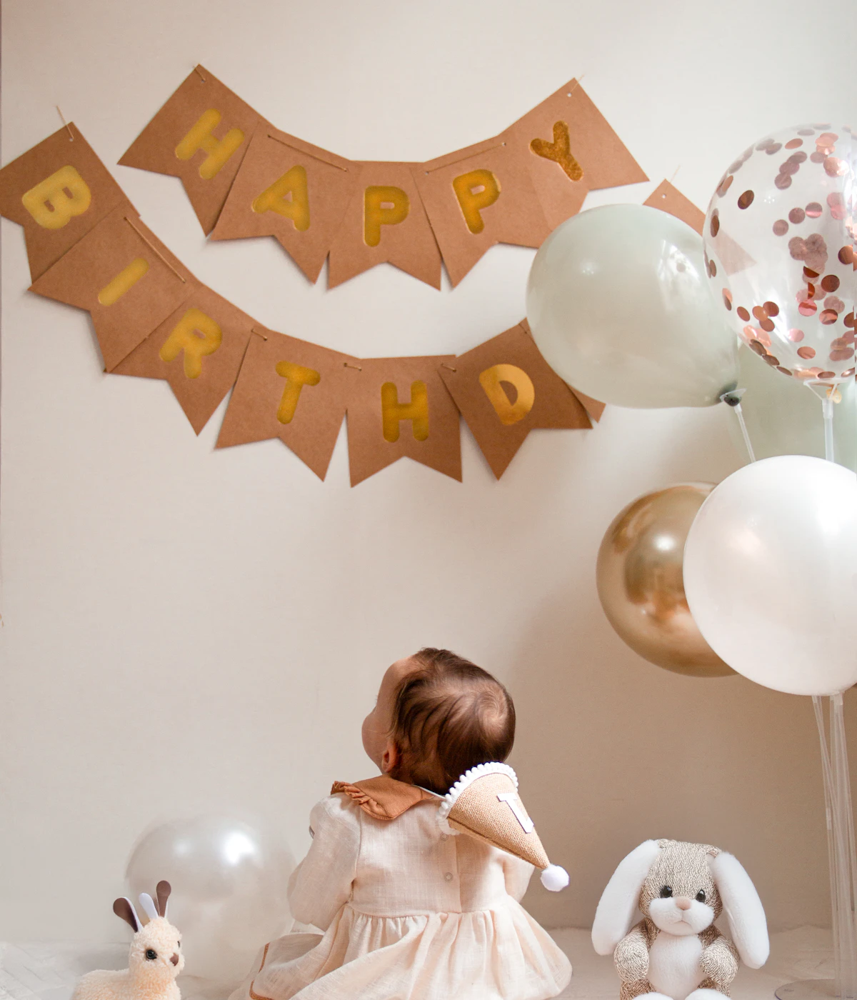
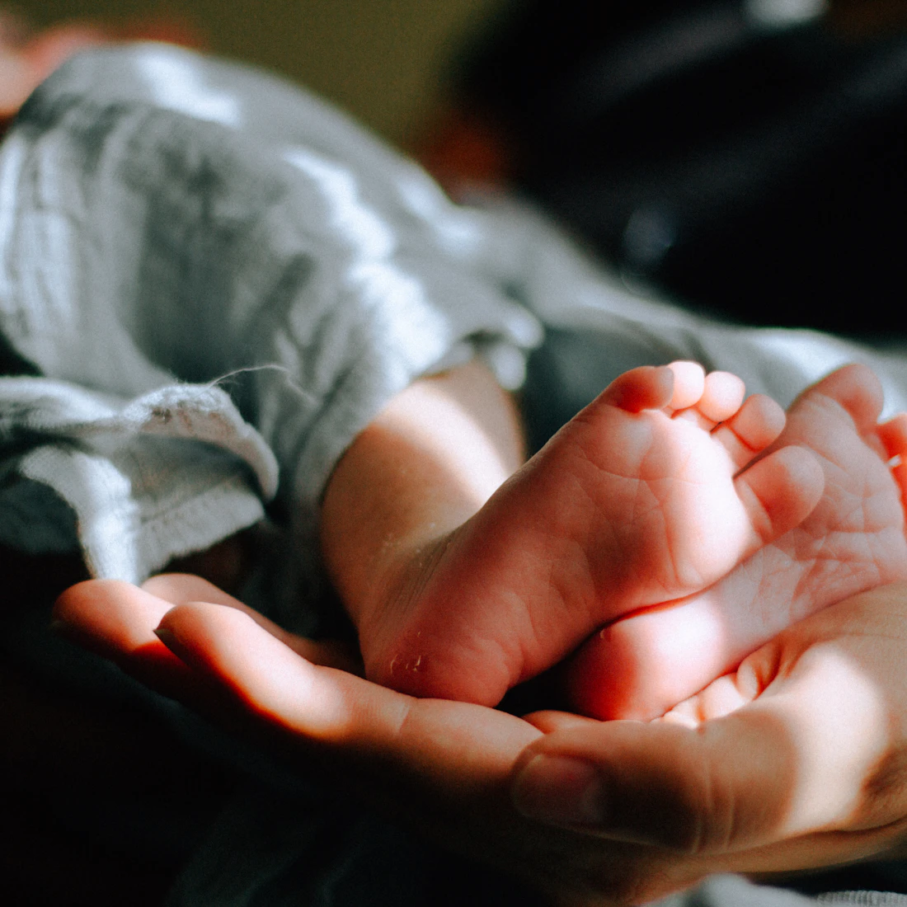
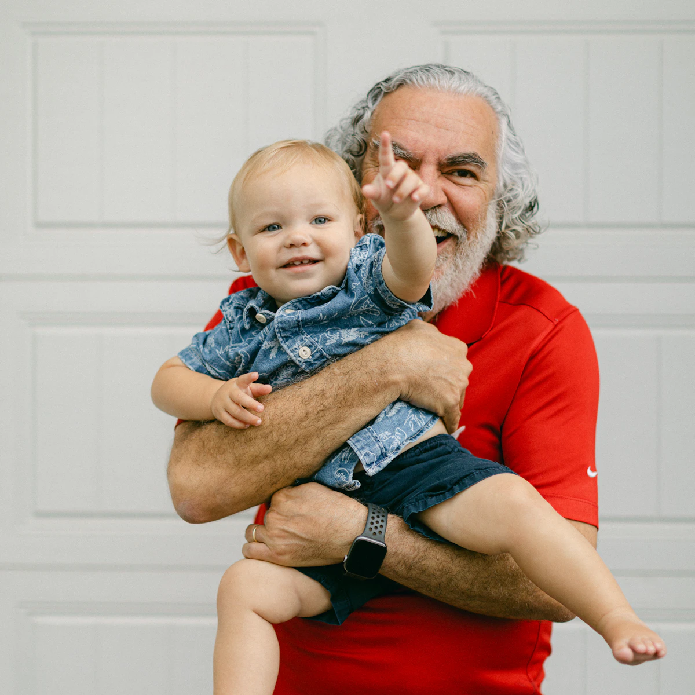
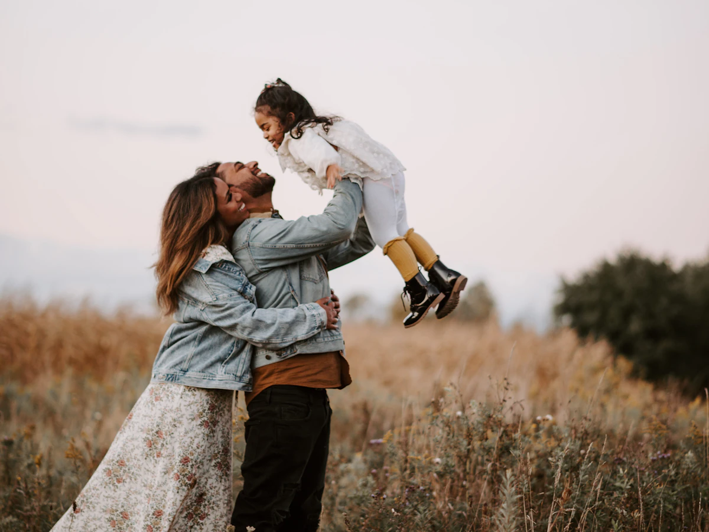

A little life, loved by many
Before we knew your laugh, we loved you.
A year of tiny firsts, held in one place. This is Mira's story—from the waiting days to the candle on her first cake.
✳
For Mira, with all our love.Jaipur · 08 January 2025
 chapter oneHello, little Mira
Before you arrived
chapter oneHello, little Mira
Before you arrived

One whole year
12little
months
Scroll through the year
12months of becoming
3generations close by
∞reasons to remember
A timeline of little firsts
Every chapter has its own kind of magic.
From the quiet anticipation to the joyful, ordinary days that made this year theirs.
01
37 weeks · the waiting days
September 2024 · before the hello
We made room for you.
We talked to you before we knew your face. Dadi knitted a tiny cap. Papa saved every name we almost chose.
“The house felt different already. Like it was holding its breath with us.”
02
08 January 2025 · day one
The first hello
And then there you were.
One tiny hand around Maa's finger. One room full of people trying not to cry and failing beautifully.
“We had waited so long to meet the person we already loved.”
03

Month four · the small things
April 2025 · finding your rhythm
Your laugh found its way home.
Sleepy mornings, new sounds, and the same little song before every nap. The days got their own gentle rhythm.
“I could listen to that laugh for the rest of my life.”
04
08 January 2026 · one candle
One year, all of us
The first candle. The whole family.
A cake on the table, marigolds by the door, and more photographs than anyone could count. We would keep them all.
“May every year bring you a table this full of love.”
Your first little circle
One little girl.
A whole family of love.
Her story belongs to everyone who sang, held, hoped and showed up. Here are a few of the people in her corner.
Meet them through their words ↗

Nani & NanaHer first cheer squad
MaaKeeper of the lullabies

PapaExpert at silly faces
✿Mirathe reason for every story
A few frames from the year
Little moments, kept close.
Not just the big days. The soft, funny, everyday pieces that make a family story feel like yours.

Up, up, upSunday afternoons
Nani's armsAlways the safest place
Those tiny toesMonth four
Up on Papa's shouldersOur first garden walk
A voice to keep
A note from Nani
“Mira, when you are big enough to hear this, remember: the whole house waited for your first smile. You made all of us softer.”
Sample voice-note transcript · First birthday
The waveform is a visual sample; no audio recording is included.
A year, in a few frames
A little reel for the days you want to visit again.
Press play to move through a short, reel-style sequence of still photographs and captions.
This is an illustrative slideshow, not a recorded video.
▶
01:12Mira, from the very beginning
✳
For every family, every first
Every little life deserves a story of its own.
This sample was made to show one possible way to tell it.
Back to Family Moments ↗